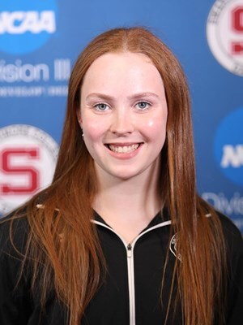
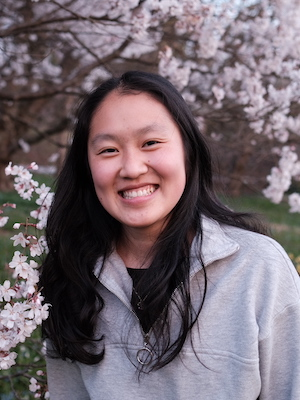
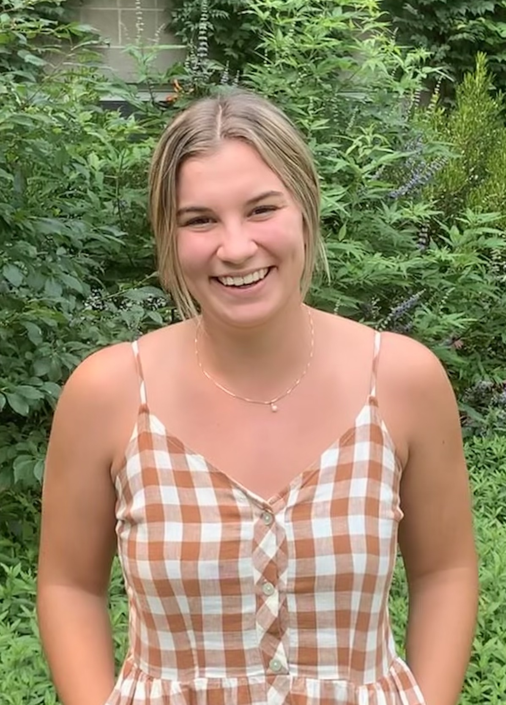
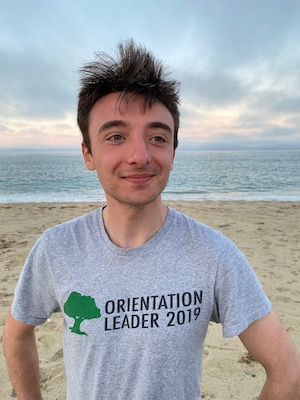

Student Research
My research group is located at Swarthmore College and focused on the measurement and analysis of forensic-decision-making processes.
Opportunities for current Swarthmore students include:
- Full-time summer research opportunities
- Academic-year hourly work
- Independent studies for academic credit
Interested students should contact me for further information. Desired prerequisites are Stat021 (Statistical Methods II) and Stat051 (Probability), but if you have some coding experience or are especially interested in statistical problems in forensics and the law, please be in touch! Students willing to work with the team for multiple semesters will be given priority.
If you are a researcher at Swarthmore College or another institution looking to collaborate, please contact me.
Highlights
Thomas Daillak ’23 and Sherry Huang ’24 were co-authors on “A Comparison of IRT-based methods for Spatial Responses”, which was accepted for publication in Quantitative Psychology after completing the peer-review process.
Horace Shew ’22 received an honorable mention in the CMSAC Reproducible Research Competition (Methods-Student Track) for his paper “Applying Hierarchical Bayesian Models to ATP Data”.
Riley Thompson ’22 was a co-author on “Modeling Covarying Responses in Complex Tasks”, which was accepted for publication in Quantitative Psychology after completing the peer-review process.
Students
|  | Sarah Conley ’24 Sarah is a Mathematics major with an emphasis in Statistics, and a Computer Science major. She spent Summer 2022 analyzing how different scoring schemes and partial credit models impact the types of conclusions that can be drawn. |
Alyssa Zhang ’24 Alyssa is a Mathematics and Computer Science double major. She worked on analyzing survey responses and demographic information of fingerprint examiners who participated in the FBI studies. |
Alumni
|  | Sherry Huang ’23 Management Development Program at M&T Bank Sherry graduated with a Mathematics major with an Emphasis in Statistics and a Computer Science Minor. Sherry worked on a project on imputation bias in minutiae marking by fingerprint examiners, including building an interactive visualization app |
Horace Shew ’22 Financial Analyst at Caine Mitter & Associates, Inc. Horace graduated with a Mathematics major with an Emphasis in Statistics along with a Classics minor. He focused on the implementation and comparison of various IRT models within a Bayesian and Frequentist framework in Summer 2021, and completed a project on modeling tennis outcomes with Bayesian hierarchical models during the 2021/2022 academic school year. |
|
|  | Riley Thompson ’22 Senior Research Assistant at the Federal Reserve Bank of Philadelphia Riley graduated with a Mathematics major with an Emphasis in Statistics and minors in Peace and Conflict Studies and Cognitive Science. Her research focused on covarying responses in IRT models and consistency of fingerprint examiner conclusions. |
|  | Thomas Daillak ’22 Analyst at Analysis Group Thomas graduated with an honors major in Mathematics and Economics. His research with the group focused on clustering methods for marked minutiae and IRT without an answer key. |
Support
Projects have been supported by:
The Center for Statistics and Applications in Forensic Evidence CSAFE, a NIST-funded Center of Excellence
The Lang Center for Civic and Social Responsibility at Swarthmore College
Swarthmore College Academic Division Summer Funding